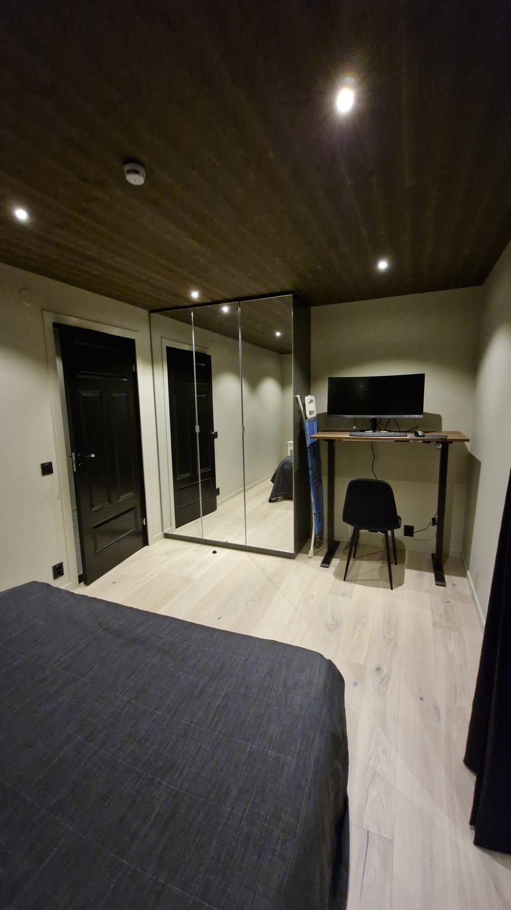
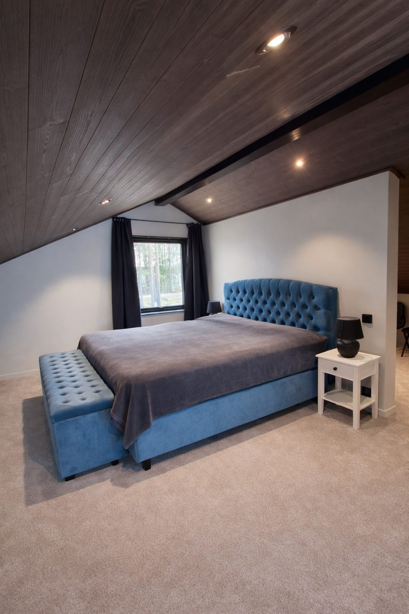
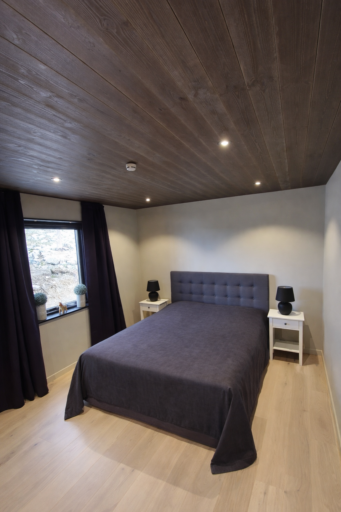

WELCOME
Designed for lake views, space and quiet days
On a headland, only 25 metres from a private sandy beach, this newly built architect-designed house of about 200 m² offers panoramic windows, 5.7 metre ceiling height and room for up to six guests.
It is a peaceful place for swimming, nature, sauna evenings and long dinners on the terrace, while still being only about 25 minutes from Falun.
WHY GUESTS LOVE IT
Highlights
LAYOUT
Three levels with light and views in focus
Entrance level
Two bedrooms, a fully equipped kitchen and a large living room with panoramic windows and lake views. There is also a spacious bathroom with shower, WC, washing machine, drying cabinet and heated towel rail, plus a hallway with good storage and a boot dryer.
Loft, about 35 m²
Open sleeping area and walk-in closet.
Basement
Sauna with lake views and a relaxation area with seating, perfect all year round.
Outdoor spaces
Veranda by the entrance and a lakeside deck with a lounge group, ideal for long summer evenings and sunsets.
SLEEPING
Bedrooms and sleeping areas

Bedroom 1
1 double bed

Bedroom 2
1 double bed

Sleeping area 3
1 double bed and 2 single beds
GUEST ACCESS
What guests can use
Guests have access to the whole house, outdoor spaces, sauna with relaxation area, sandy beach and one jetty. The plot is about 2,800 m² and also has a swing and a small playhouse for children.
Please note that the hot tub, guest house and other outbuildings are not included in the rental and are for private use.
PRACTICAL DETAILS
Good to know
Cancellation policy
Cancellation details are confirmed together with the booking, before any payment is made.
House rules
Check-in from 15:00, flexible when possible. Check-out before 11:00. Maximum 6 guests. Minimum booking age is 30 years.
Safety and property
Lakefront property with nearby water. The plot has a swing and playhouse. Only paying guests may visit the property.
Final cleaning is required and costs 850 SEK.
When sending a booking request, please write a few lines about yourselves and the purpose of your stay.
Parts of the kitchen and one bedroom are in an older part of the house, originally from 1960, now fully integrated with the newly built part from 2026.
One of the jetties was damaged during winter storms and will be renovated during 2026. The work does not affect stays during rental periods.
Electric car charger is available and charged at 3 SEK/kWh.
MEET YOUR HOST
Hosted by Alexander
Alexander
Host
Hi! We are a family that loves Dalarna and nature. Since 2022 we have had the joy of welcoming guests to our holiday home outside Falun.
The house has been in our family since 1960 and means a great deal to us. During 2024-2026 we carried out a major extension with panoramic windows, sauna and relaxation area to create a place where guests can unwind and enjoy the lake view.
We always do our best to make guests feel warmly welcome and to help them have a memorable stay.
Response rate 100%. Usually replies within one hour.
DISTANCES
Close to Dalarna, even closer to the lake
AMENITIES
Comforts and equipment
- Private sauna
- Lake access and beach access
- Boat place, boat and SUP
- Outdoor dining area and furniture
- BBQ grill and grill tools
- Outdoor shower
- Garden, swing and playhouse
- Fully equipped kitchen
- Dishwasher, oven, stove and microwave
- Fridge, freezer, coffee maker and kettle
- Toaster, blender, cookware and tableware
- Wine glasses and dining table
- Basic cooking essentials
- Washer, drying rack and drying cabinet
- Wifi and portable wifi
- TV and fireplace
- Dedicated workspace
- Air conditioning and heating
- Free parking on the property
- EV charger
- Fire extinguisher, smoke alarm and first aid kit
- High chair
- Crib and foldable travel crib on request
- Extra pillows and blankets
- Hangers and clothing storage
- Hair dryer and iron
- Private entrance
- Long-term stays allowed